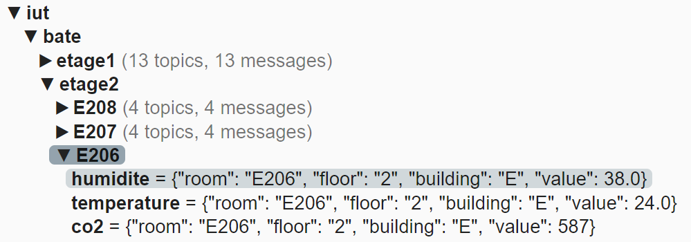
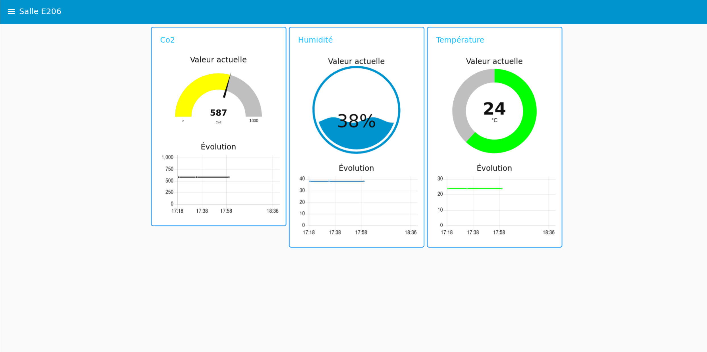
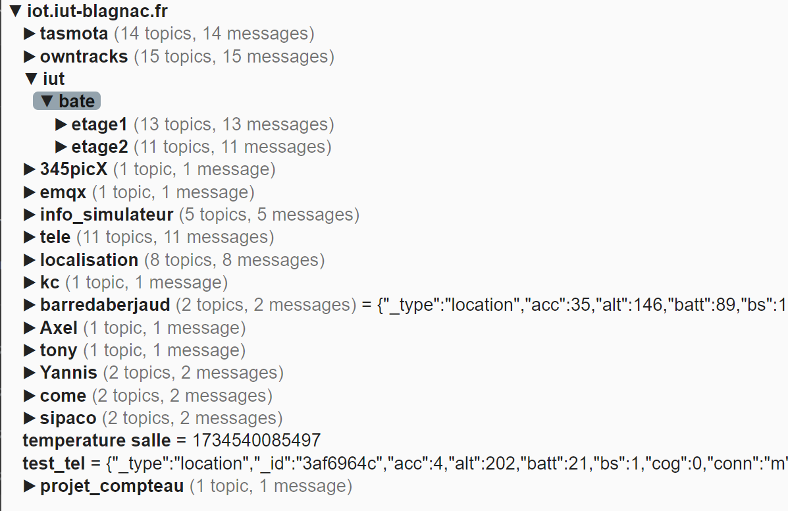

Au cours du projet, nous avons rencontré plusieurs fois un dysfonctionnement du broker MQTT principal de l’IUT. Il arrivait qu’il ne réponde plus, rendant impossible la récupération des données. Face à ce souci, notre enseignant nous a fourni une adresse IP alternative pour contourner le problème temporairement. Cela a demandé de modifier tous les scripts qui utilisaient l’adresse d’origine, ce qui a fait perdre un peu de temps et perturbé nos tests automatisés.
Lors de la mise en place des capteurs dans Node-RED et le site, nous avons remarqué que la salle E206 ne disposait pas de capteurs de luminosité fonctionnels. De plus, les capteurs présents dans cette salle n’enregistraient qu’une seule mesure, très ancienne. Nous pouvons voir ci-dessous qu'il manque la valeure de luminosité.
Cela a limité notre capacité à afficher des données dynamiques pour cette salle. Nous avons donc dû nous adapter : la luminosité n’est pas affichée pour E206, et les autres valeurs restent constantes car les données sont toujours les mêmes. En effet, sur l'affichage de la salle E206, il ne figure pas de tableau pour la luminosité et les données des autres capteurs sont obsolètes. Ci-dessous est affiché les données de la salle E206. Les valeures que vous pouvez voir ne sont dû qu'au déploiement du flow nodered ( les dernières données sont envoyés dans l'interface quelque soit le moment où elles ont été capturées ).
Un autre obstacle a été le fonctionnement de nos machines virtuelles en mode bridge. À chaque fois que nous changions de salle ou de réseau, l’adresse IP de la VM changeait. Cela cassait la connexion à tous les services Docker (Node-RED, InfluxDB, Grafana) puisque ceux-ci étaient liés à des IP précises. Nous avons dû reconfigurer manuellement les liens à chaque changement, ce qui nous a fait perdre du temps et a rendu le déploiement moins fluide.
Avec le broker MQTT fourni par notre enseignant, nous avons constaté qu’il ne contenait qu’un seul bâtiment. Les autres bâtiments mentionnés dans le cahier des charges étaient tout simplement absents. Pour respecter la structure de la base de données et la logique prévue (avec deux gestionnaires), nous avons quand même mis deux gestionnaires dans la table, mais un seul est réellement utilisé. Cette contrainte technique nous a obligés à adapter le site en conséquence, tout en gardant une base extensible au cas où d'autres bâtiments viendraient s’ajouter plus tard. Ci-dessous est affiché une image du broker montrant l'absence des autres batiments.
